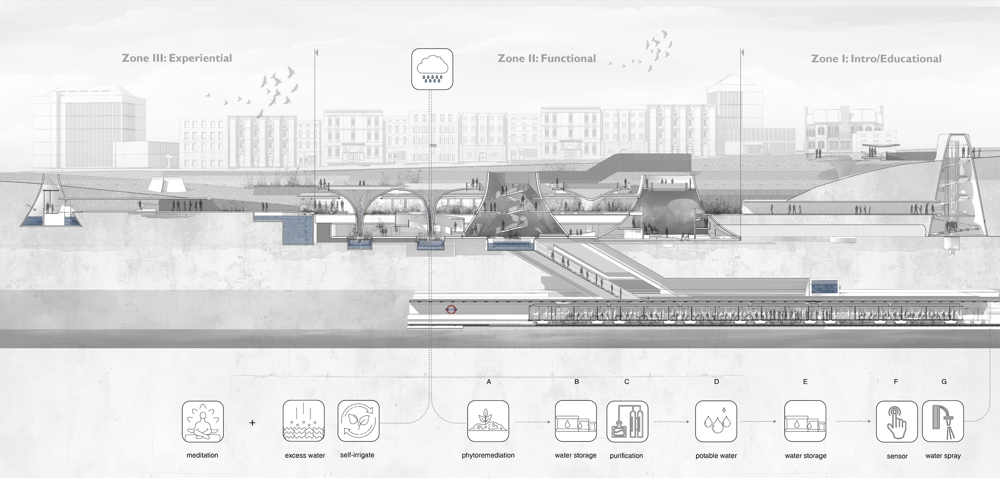

Overview
The project reclaims an abandoned underground station to address London's abundant rainfall and severe air pollution in its subway system. The proposal integrates two key architectural elements: the Funnel, which collects and purifies rainwater dispersed as fine mist in the active subway to capture airborne particulates, and the Chamber, offering diverse spatial experiences including meditative areas and interactive zones for commuters.
Architecture here serves as a form of technology — intervening to redefine ecological and urban challenges through innovative spatial and environmental solutions. Experimental studies validate the system's efficacy in dust absorption, with PM sensor data guiding real-time microcontroller operations.
Full Documentation